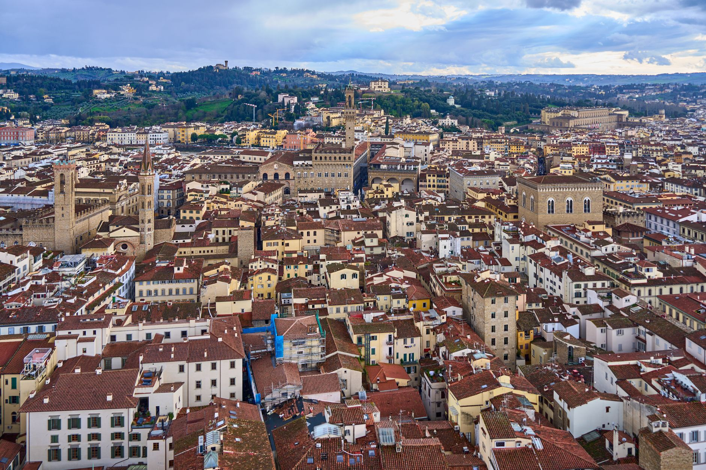

Itinerary · 6 days
Florence and Bologna: 6-Day Family Autumn Itinerary
A moderate two-base route for families who want art, food and walkable city time with one protected rail move and room to recover.

Checked before you commit
Illustrative six-day plan for two adults and children at a moderate pace. Dates, schedules and supplier details are not verified here.
Florence 3 nights → Bologna 2 nights; rail move on Day 4, never attached to departure.
One primary anchor per day, arrival and departure buffers, and lower-energy alternatives.
Check rail, tickets, access, weather, prices, opening hours and supplier terms live.
Planning boundary: a booking-hub link indicates intent only; it does not prove a booking occurred.
Route and base logic
Use Florence for the arrival, one major cultural choice and a flexible neighbourhood day. Move once to Bologna for a compact food-and-arcade finish. Protect the transfer day and the morning after it; if the family arrives depleted, drop the optional add-on rather than compressing the route.
Day-by-day plan
Day 1 — Arrive in Florence and settle
Arrival transfer and check-in come first. After luggage, allow one nearby meal or a short Piazza della Repubblica/river walk if energy allows. No timed attraction on arrival day; keep the base practical for the next morning’s cultural anchor.
Live check: Confirm accommodation access, airport/station route, room fit and late-arrival meal options.
Day 2 — Florence cultural anchor: choose one major visit
Morning, 09:00–12:00: choose one major visit such as the Uffizi or Accademia, subject to timed entry. Lunch near the historic centre; afternoon: add Piazza della Signoria or Mercato Centrale only if the walking load fits. Keep the return route short.
Live check: Check timed entry, opening hours, ticket terms, access, walking surfaces and crowd conditions.
Day 3 — Oltrarno: food, craft and a lower-energy finish
Morning: cross to Oltrarno for Santo Spirito, artisan streets and one food or craft focus. Afternoon: choose Boboli Gardens or an indoor alternative such as Palazzo Pitti, then finish near the base. The point is a change of pace, not another list of major sights.
Live check: Check garden/museum hours, rain and wind fallback, walking surfaces and seasonal daylight.
Day 4 — Protected rail move to Bologna
Morning: take the selected Florence–Bologna train with luggage and station access already checked. Allow 2–3 hours door-to-door for the move and check-in. Late afternoon: use Piazza Maggiore and a nearby portico walk only after settling; do not attach a non-refundable timed experience.
Live check: Confirm train, luggage needs, station access, Bologna check-in and disruption terms.
Day 5 — Bologna food-and-city cluster
Morning: build around Quadrilatero food streets or Mercato delle Erbe, then choose one nearby city anchor such as Piazza Maggiore, the Two Towers exterior or Archiginnasio. Lunch close to the cluster; use the porticoes for a shorter afternoon and keep a museum/café fallback.
Live check: Check reservation terms, dietary needs, accessibility, seasonal hours and current transport conditions.
Day 6 — Bologna departure buffer
Keep the morning close to the Bologna base. Breakfast and one short stop are possible only after checking the onward train/airport timing, luggage and station access. If departure is early, make the day transfer-only.
Live check: Confirm departure time, station/airport route, luggage margin and any disruption notice.
Planning notes
Confirm arrival and departure airports, station transfers, accommodation locations, rail schedules, tickets, access, weather, daylight, strikes or disruption notices, cancellation terms and current prices. Dates are illustrative. Alfred can structure an editable route; it does not verify live availability or complete a booking.